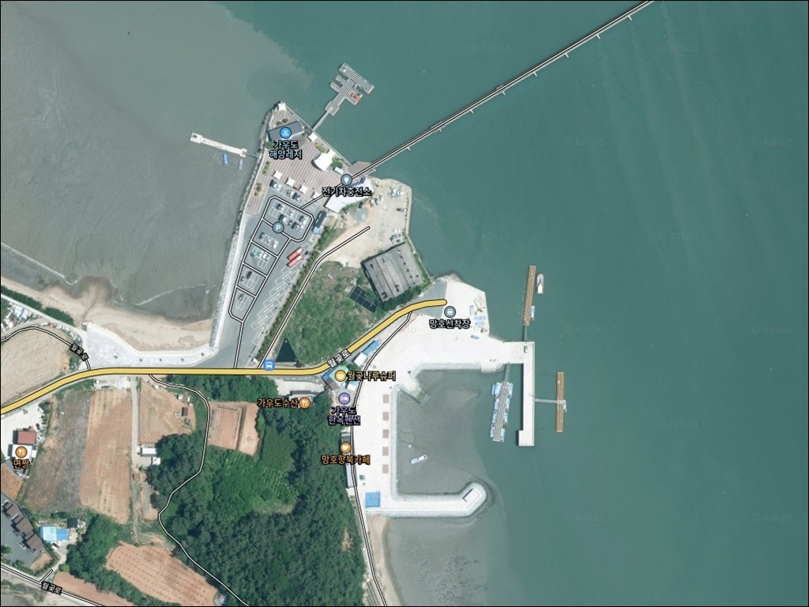
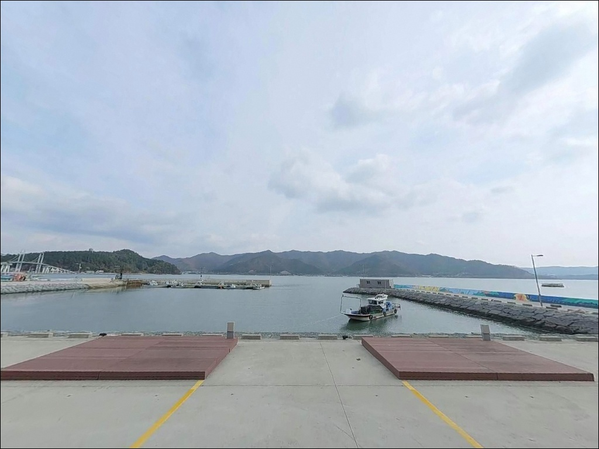
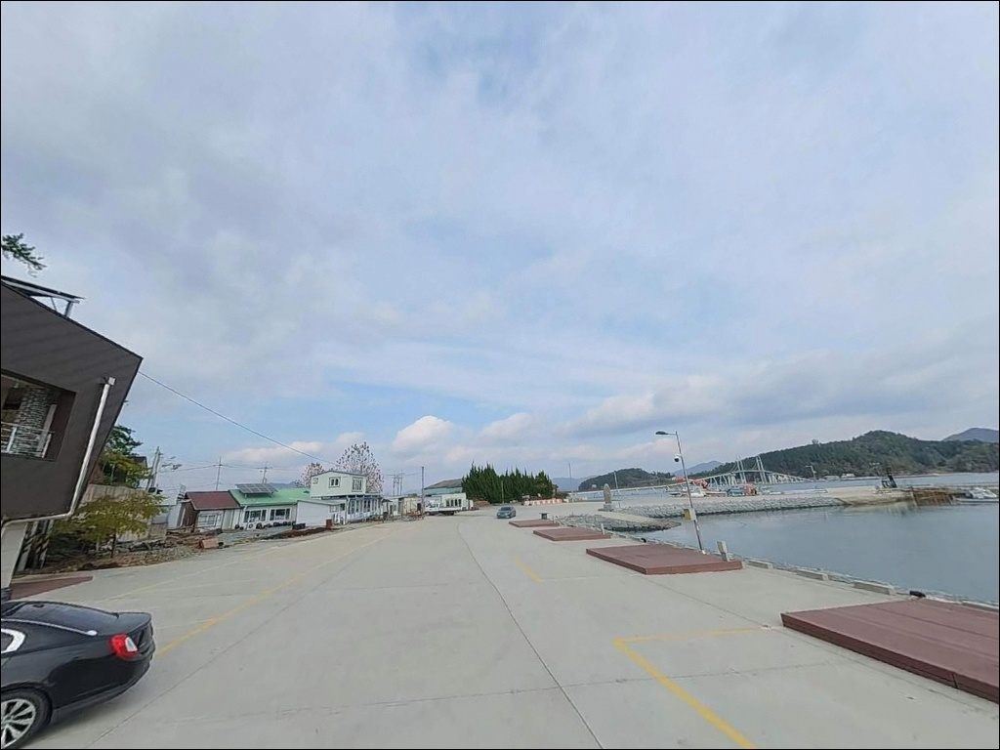
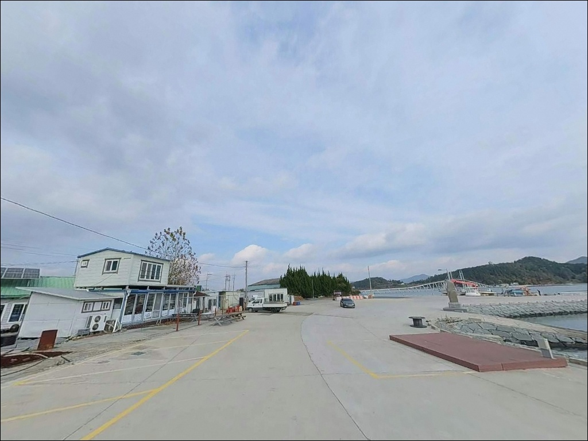
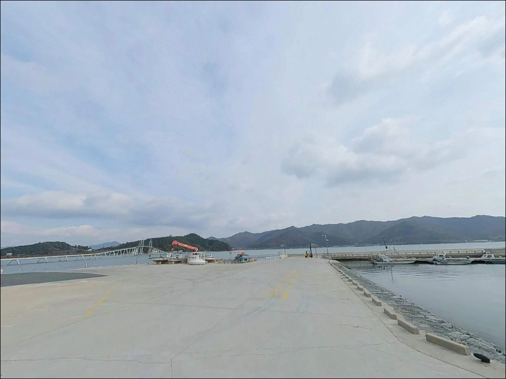
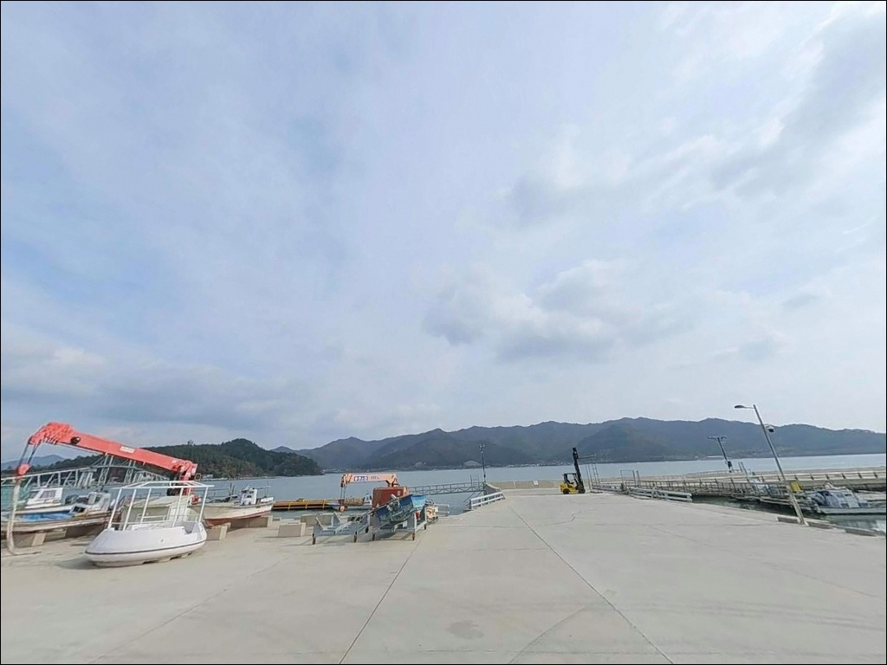
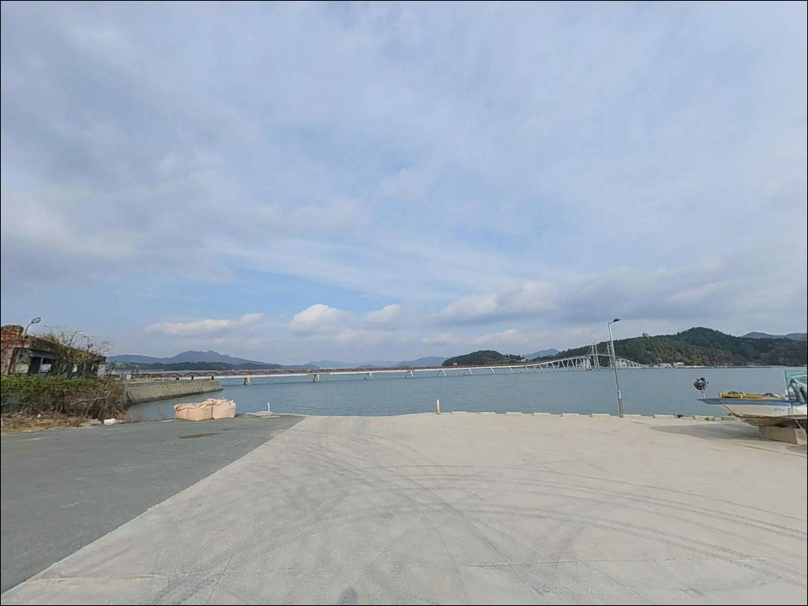
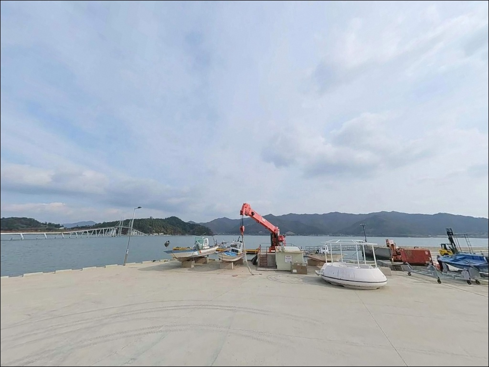
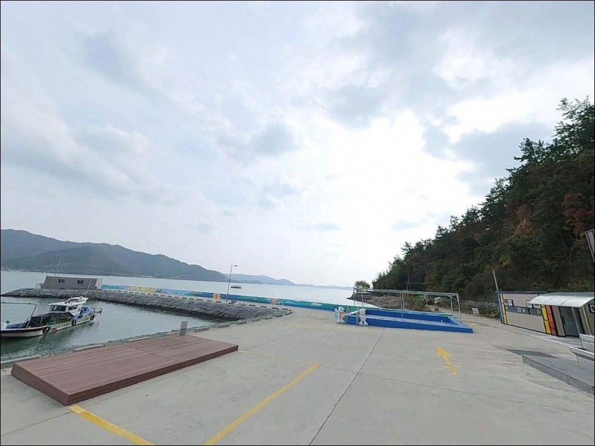

이 페이지에는 광고(제휴 링크 포함)가 있으며, 광고 링크를 통해 구매하면 운영자가 판매 수익 또는 수수료를 받을 수 있습니다. 포인트 사진: 카카오맵 스카이뷰·로드뷰. 이 페이지의 지도·사진 이미지는 카카오맵의 실제 서비스 이미지와 다를 수 있습니다.

망호선착장
전남 강진군 도암면 신기리 123-4
내만이라고 해서 조류가 없다는 판단은
강진만에서는 틀립니다.
망호선착장 앞은 강진만의 창조·낙조 흐름이
선착장 전면부를 직접 통과하는 구간이라,
물때를 벗어난 입장은 채비 컨트롤부터 흔들립니다.
가우도 출렁다리 서쪽 진입부와 나란히 자리한
이 선착장은 방파제 140m 규모의
정비된 어업 거점이기도 합니다.
주차장이 넓고 진입로가 편리해
접근성 면에서는 강진만 권역 중
가장 부담이 낮은 포인트에 속합니다.
이 글은 망호선착장의
진입 환경, 차박 여건, 물때 판단 기준,
낚시 스타일별 공략 조건에 집중합니다.
조황 단정이나 특정 어종 보장은
이 글의 범위에 포함되지 않습니다.

강진읍에서 23번 국도를 타고
도암면 방향으로 내려오면
가우도 관광지 안내판을 따라
선착장까지 이어지는 왕복 2차선
포장도로와 만납니다.
급경사·비포장 구간 없이
승용차와 캠핑카 모두 진입이 가능한 수준입니다.
선착장 바로 앞에는 망호선착장 무료 공영주차장이
조성되어 있습니다.
가우도 트레킹·출렁다리 방문객을 함께 수용하는
규모로 설계되어 있어
대형 SUV나 루프탑 캠퍼도
회차와 주차에 제약이 없는 편입니다.
주차 후 낚시 자리까지의 동선은
선착장 안벽과 방파제 선단 두 방향으로
나뉩니다.
방파제 선단 쪽은 외항을 향해 열려 있어
조류가 더 뚜렷하게 흐르는 구간이며,
안벽 쪽은 접근이 쉬워 생활낚시에 어울립니다.

망호선착장 주차장은 가우도 관광 인프라와
연계된 넓은 평탄 부지입니다.
낚시를 마치고 차 안에서 하룻밤 머무는 차박 용도로는
공간 여건 자체가 이 해역에서
가장 안정적인 조건 중 하나입니다.
다만 이 포인트는 완전한 고립형 어촌 선착장이 아닙니다.
가우도 출렁다리 진입부와 나란히 붙어 있어
관광 시즌에는 야간에도 차량과 탐방객 왕래가 있고,
선착장과 주차장 주변에
가로등과 경관 조명이 설치되어 있습니다.
조용하고 어두운 환경을 원하는 차박이라면
기대와 다를 수 있습니다.
내만 위치라 파도 소음은 거의 없습니다.
기상에 따른 바람 영향도
외해 방파제보다 현저히 적은 편이라
차박 체류 중 체감 안정성은 높습니다.
다만 망호마을 어촌 주거지와 인접하므로
야간 소음과 조명은 최소화하는 것이
기본 매너입니다.

망호선착장에서 반경 3km 이내에는
가우도 관광권과 도암면 소재지가
함께 들어옵니다.
도암면 항촌리 일대에 소형 마트와 식당이 있어
기본 식료품과 낚시 소품은
현지에서 보충이 가능한 권역입니다.
강진읍내로 이동하면
대형 마트·낚시점·병원이 있는
본격적인 생활 인프라권에 닿습니다.
당일 출조라면 출발 전 강진읍에서
소품과 얼음을 갖추고 내려오는 동선이
가장 효율적입니다.
선착장 내 어촌체험휴양마을(망호마을)이
운영 중인 것은 강진군 공식 자료에서 확인됩니다.
단, 구체적인 운영 시간과
취사·편의시설 이용 가능 여부는
방문 전 사전 확인이 필요합니다.

망호선착장에서 가장 먼저 확인할 것은
강진만의 물때입니다.
내만이지만 선착장 전면부로
창조·낙조류가 뚜렷하게 통과하는 구간이라
바다타임에서 강진만 기준 물때를 확인하고,
조류가 살아 있는 시간대를 목표로
입장 시각을 맞추는 것이 기본 전략입니다.
선착장 안벽과 방파제 선단 주변은
선박 출입이 이루어지는 공간입니다.
어선 이동 동선과 어구에 채비가 걸리지 않도록
자리를 잡는 것이 먼저이며,
가우도 관광객 동선과도
겹치지 않는 자리 선정이 중요합니다.
내만이라도 기상 변화 시
바람 영향이 즉각 반영되는 구조입니다.
야간 낚시를 계획한다면
헤드랜턴과 구명조끼는 기본이며,
선착장 주변이 조명이 밝은 편이지만
방파제 선단 외항 방향은 어두운 구간이 있습니다.
개인 조명을 반드시 챙기는 편이 안전합니다.

망호선착장은 강진만 내만 서쪽 연안에 위치합니다.
강진만은 탐진강 하구와 남쪽 고금도 사이에
반폐쇄형 만(灣)으로 형성된 구조입니다.
외해 파도의 직접 영향을 받지 않지만,
창조·낙조류는 만 내부를 돌아
선착장 전면부에서 뚜렷하게 발생합니다.
방파제 연장 규모는 140m로
소형 선착장 기준으로는 상당한 편입니다.
방파제 선단 쪽은 외항 방향으로 열려 있어
내항보다 조류를 더 직접적으로 받는 자리입니다.
선착장 앞쪽으로 수심이 점진적으로 깊어지는 구조라,
캐스팅 거리를 확보하면 수심 변화대를
효과적으로 공략할 수 있습니다.
바닥 저질은 뻘과 모래가 혼합된 형태입니다.
방파제 주변에는 수중 구조물과
가우도 연결 해역의 지형 변화가 있어
어류 은신 여건이 갖춰져 있습니다.
밑걸림이 심한 암초 지형은 아니라
채비 손실 걱정 없이 바닥을 탐색할 수 있습니다.
출조 전에 강진 가우도 일대 최신 조황 검색을
먼저 해보시는 편이 좋습니다.

이 포인트에서 가장 기본이 되는 낚시는
원투낚시입니다.
뻘·모래 혼합 저질의 완만한 바닥 구조는
참갯지렁이·청갯지렁이를 미끼로 한
원투 채비가 힘을 발휘하기 좋은 조건입니다.
강진만 내만이라는 특성상
붕장어와 도다리를 기대해 볼 수 있는 해역으로,
야간 원투가 특히 유효합니다.
에깅도 이 포인트에서 적합한 스타일입니다.
선착장 상판에서 가우도 방향으로
캐스팅하면 수심 변화대를 노릴 수 있습니다.
강진만 내만권에서
가을철 갑오징어 반응이 나타나는 시기에
에기를 운용하면 조과를 기대해 볼 수 있습니다.
전어 시즌에는 찌낚시와 루어낚시도 활발해집니다.
조류가 살아 있는 물때에 방파제 내항 쪽에서
찌 채비를 운용하거나,
지그헤드 채비로 선착장 안벽 주변을 탐색하는
워킹 루어 방식도 이 포인트 구조와 잘 어울립니다.
강진만 해역 특성상
감성돔과 농어는 봄~가을에 활성이 올라오는 어종이며,
찌낚시 방식으로도 접근해 볼 수 있습니다.

망호선착장이 관광객으로 붐비거나
조류 여건이 기대에 못 미칠 때는
같은 신기리 해역 안에 있는
가우도 낚시공원이 첫 번째 대안입니다.
강진군이 공식 조성한 낚시 전용 공간으로,
가우도 동서 출렁다리 양쪽에서 진입이 가능합니다.
강진만에서 조황 기록이 가장 많이 집중된 지점입니다.
차박 여건이 여의치 않거나
더 조용한 환경을 원한다면
가우도 반대편 진입부인
저두주차장이 대안이 됩니다.
주차 여건이 양호하고
관광 비수기 야간에는
망호선착장보다 한적한 환경이 형성됩니다.
당일 원정 대안으로는
강진군 마량면의 마량항을 고려할 수 있습니다.
1971년 지정 국가어항으로
방파제 낚시 인프라가 갖춰져 있으며,
낚시어선 선상낚시 거점이기도 합니다.
망호선착장과 같은 강진 해역이지만
포인트 성격이 달라
비교 탐색 동선으로 적합합니다.

원투낚시와 에깅을 즐기는 낚시인이라면
망호선착장의 지형 조건은
잘 맞는 구조입니다.
뻘·모래 혼합 저질의 완만한 바닥,
수심 변화대를 노릴 수 있는 선착장 전면부,
강진만 해역 특유의 감성돔·전어·두족류 패턴이
계절에 따라 기대해 볼 수 있습니다.
반면 완전한 고립형 어촌 포인트를 원한다면
관광지 인접이라는 환경이 불편할 수 있습니다.
야간에도 유동 인구가 있고
조명이 밝은 편이라는 점은 미리 감안해야 합니다.
그러나 진입·주차·안전 인프라가
강진 해역 포인트 중 가장 편리한 곳 중 하나이므로,
처음 강진만을 탐색하는 낚시인이라면
시작점으로 삼기에 좋은 포인트입니다.
무료 주차장이 넓고 평탄해
낚시 후 차 한 칸에 하룻밤 머무는
차박 여행자에게도 어울리는 공간입니다.
가우도 낚시공원을 함께 묶어
강진만 내만 낚시 투어로 계획한다면
하루를 알차게 채울 수 있는 동선이 됩니다.